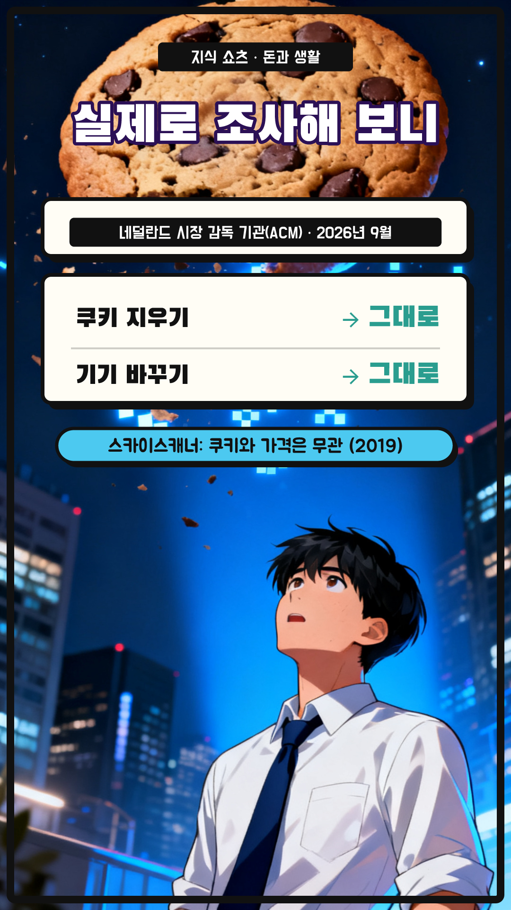
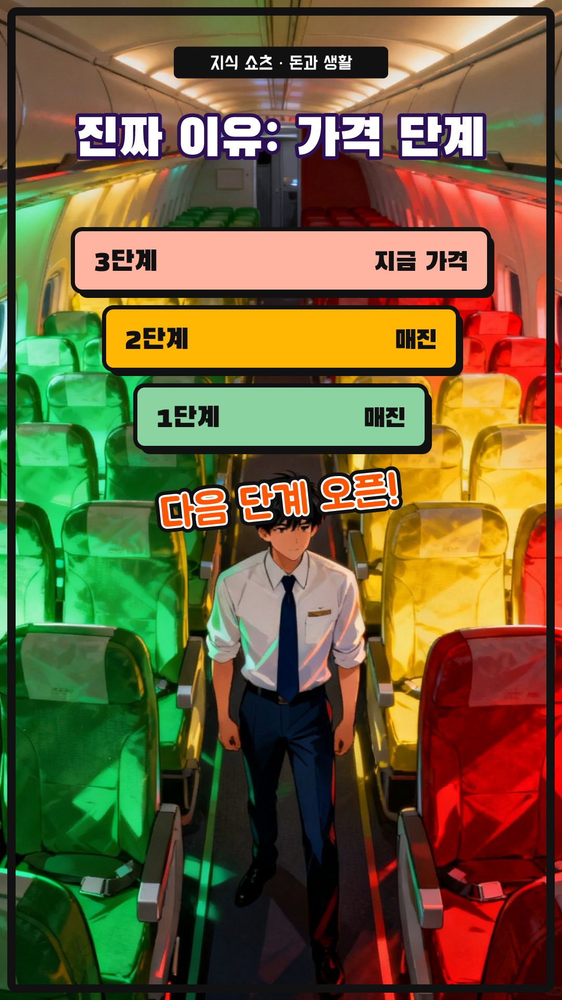
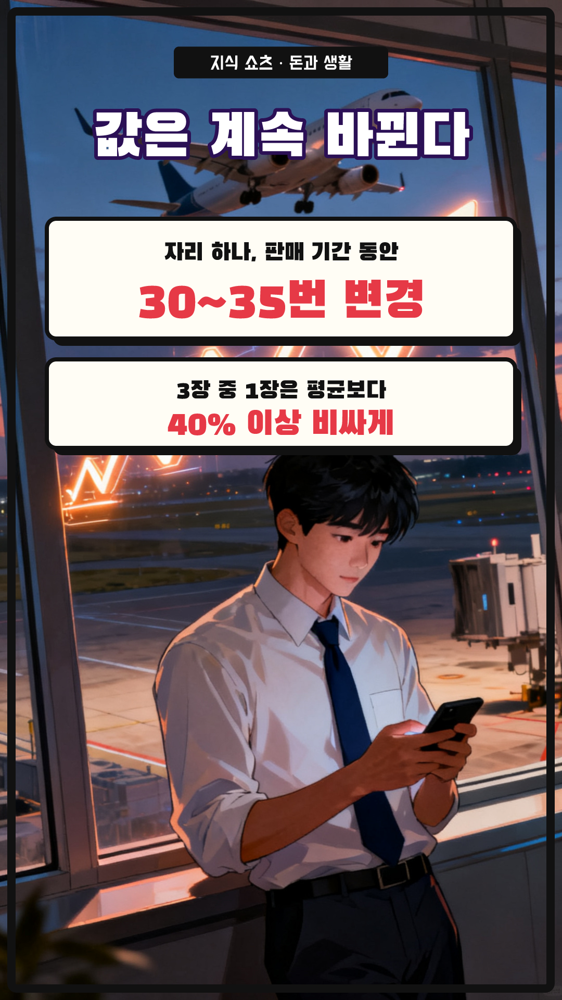
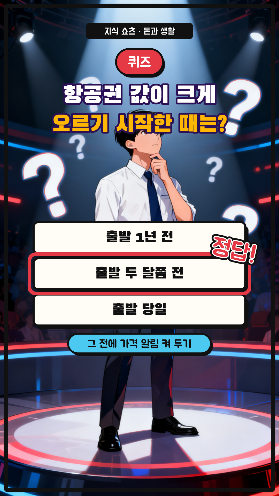

비행기표, 쿠키 지우면 싸질까? — 7컷 콘티
58초 (+ 썸네일 1초) · 1080×1920 · 30fps · 자막 카드 y=1480 · 내레이션 ko-KR-Chirp3-HD-Charon · 웹툰풍 액션 세미리얼 AI(Seedream 4.0) + 말풍선 · 효과음
S01
0:00–0:08 · 8.6초
모션
ai 카메라 이동 0.0s, title 팝 0.0s, bubble 팝 3.2s, flip 도장 6.4s
내레이션
비행기표, 쿠키를 지우면 싸진다는 말 들어 봤죠? / 검색할수록 비싸진다는 그 소문, 사실일까요? / 결론부터 말하면, 아니에요

S02
0:08–0:18 · 9.6초
모션
ai 카메라 이동 0.0s, title 팝 0.0s, study 팝 0.4s, rows 와이프 ↓ 3.7s, sky 페이드 6.8s
내레이션
올해 네덜란드 시장 감독 기관이 항공권 값을 조사했어요 / 쿠키를 지우거나 기기를 바꿔도 값은 달라지지 않았어요 / 스카이스캐너도 쿠키는 가격과 상관없다고 밝혔죠

S03
0:18–0:26 · 8.5초
모션
ai 카메라 이동 0.0s, title 팝 0.0s, ladder 와이프 ↑ 2.5s, sfx 도장 5.5s
내레이션
그럼 다시 볼 때마다 값이 왜 오를까요? / 같은 비행기 자리에도 가격 단계가 여러 개 있거든요 / 싼 단계가 다 팔리면 다음 단계 가격이 열려요

S04
0:26–0:34 · 7.300000000000001초
모션
ai 카메라 이동 0.0s, title 팝 0.0s, times 팝 0.3s, third 팝 3.5s
내레이션
자리 하나 값은 판매 기간 동안 30번 넘게 바뀌어요 / 세 장 중 한 장은 평균보다 40% 넘게 비싸게 팔리죠
S05
0:34–0:40 · 6.5초
모션
ai 카메라 이동 0.0s, title 팝 0.0s, aiprice 팝 2.4s, now 페이드 3.6s
내레이션
다만 앞으로는 달라질 수도 있어요 / AI로 사람마다 값을 다르게 매기는 맞춤 가격이 늘 거라는 전망이에요

S06
0:40–0:49 · 9.100000000000001초
모션
ai 카메라 이동 0.0s, badge 팝 0.0s, question 팝 0.3s, choices 팝 0.9s, answer 도장 4.5s, why 페이드 7.0s
내레이션
자, 퀴즈! 이 조사에서 항공권 값이 크게 오르기 시작한 때는? / 정답은, 출발 두 달쯤 전이에요! / 그 전에 가격 알림을 켜 두는 게 좋아요
S07
0:49–0:58 · 8.399999999999999초
모션
ai 카메라 이동 0.0s, look 팝 0.2s, button 팝 2.9s, finger 탭 3.5s
내레이션
쿠키 대신 타이밍, 그게 진짜 꿀팁이에요 / 더 많은 돈 이야기가 궁금하다면 구독해 주세요